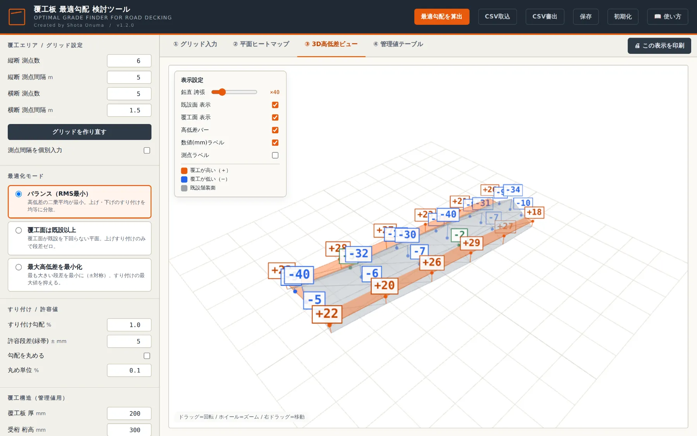
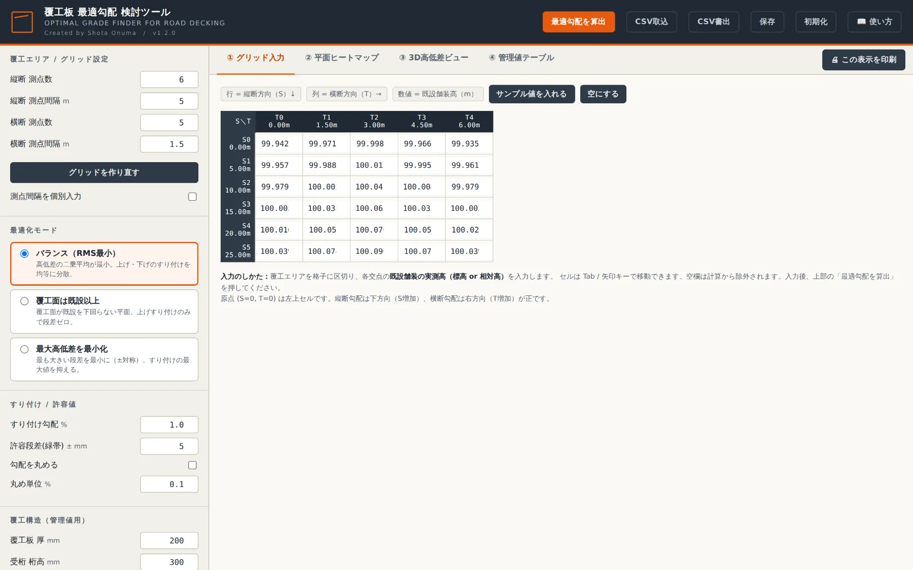
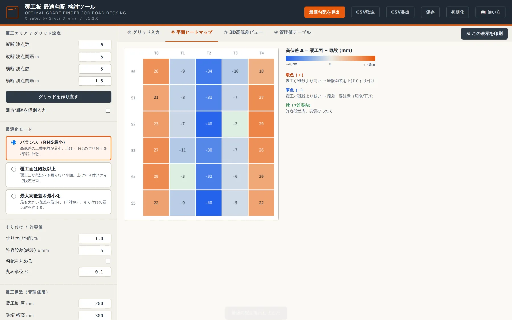
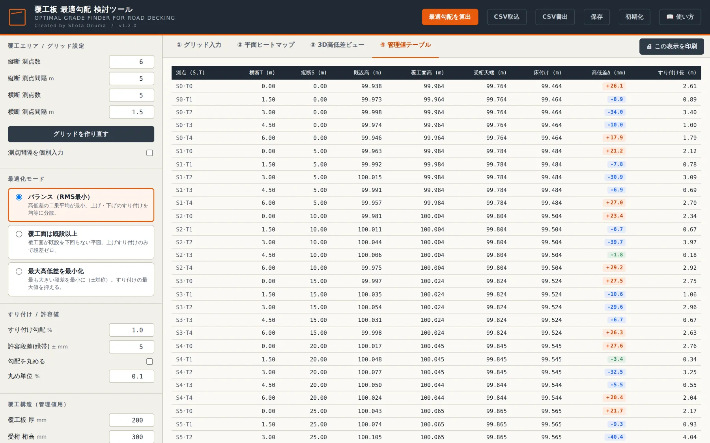

覆工板 最適勾配 検討ツールOPTIMAL GRADE FINDER FOR ROAD DECKING
「この点に合わせると向こうが浮く」を、もう繰り返さない。 既設舗装の実測高をグリッドに入れて1クリックすれば、全測点をまとめて評価して高低差が最小になる縦断・横断勾配を算出。 各測点の高低差・すり付け長・受桁天端・床付けまで、そのまま検討書に使える数字が出ます。

Excelで勾配を手探り、点が増えるほど収束しない
合わせては浮く、の繰り返し
ある測点に高さを合わせると別の点が浮く。勾配を0.1%ずつ動かして全体を見直す作業が、測点が増えるほど終わらない。
段差をどこで飲むか説明しづらい
「なぜこの勾配にしたか」を数字で示せない。最大段差・すり付け量の根拠が検討書に書けない。
受桁天端・床付けの拾い直し
勾配が変わるたびに、覆工板厚と桁高を引いた受桁天端・床付けを全測点で計算し直す。
入力は実測高だけ。あとは1クリック
覆工面を1枚の平面として置き、入力した全測点に対して最適になる縦断勾配・横断勾配・基準高を求めます。
グリッド入力
行＝縦断(S)、列＝横断(T)の表に実測高を入力。標高でも現場基準の相対高でも可。測れなかった点は空欄のままで計算から除外。非等間隔の測点にも対応。
3つの最適化モード
バランス（RMS最小）／覆工面は既設以上（段差ゼロ・上げすり付けのみ）／最大高低差を最小化（±対称）。切り替えは即時再計算、見比べて選べます。
勾配の制限と丸め
排水や設計条件による勾配の上下限、0.1%単位などへの丸めに対応。制限した範囲でいちばん高低差が小さい勾配を探します。
平面ヒートマップ
どこが浮いて、どこが沈むかを色で一望。暖色＝覆工が高い、寒色＝低い、緑＝許容段差内。セルには高低差(mm)。
3D高低差ビュー
既設面と覆工面を立体で重ね、鉛直誇張で数ミリの差を見える化。打合せで説明するときに一番伝わる画面。ライブラリ同梱でオフラインでも動作。
管理値テーブル
測点ごとに 既設高・覆工面高・受桁天端・床付け・高低差Δ・すり付け長 を一覧。覆工板厚と桁高を入れれば、施工に渡す数字がそろいます。
タブごとに印刷
表示中のタブがそのまま検討資料に。勾配・モード・最大/最小Δ・RMS・出力日の見出しが自動で付き、PDF保存にも対応。
CSVで受け渡し
測量値をExcelから取り込み、グリッドをCSVで書き出し。コメント行と測点ラベル付きの分かりやすい形式。
ブラウザ内に自動保存
算出・保存のたびにそのPCのブラウザへ記憶。次回は続きから。サーバーへの送信はありません（そもそも通信しません）。
クイックスタート
開いた直後はサンプル値が入っています。まずサンプルで一周してみるのが早いです。
覆工エリアを決める
サイドバーで縦断・横断の測点数と間隔を入力し「グリッドを作り直す」。等間隔でなければ「測点間隔を個別入力」に。
既設舗装高を入力
①グリッド入力の表に実測高(m)を打ち込む。Tab/矢印キーで移動。測れなかった点は空欄でOK。
モードを選んで「最適勾配を算出」
迷ったら「バランス（RMS最小）」。サイドバー下部に縦断勾配・横断勾配・最大/最小高低差・RMSが出ます。
4つのタブで確認
②ヒートマップで高低の分布、③3Dで面の傾き、④管理値テーブルで施工に渡す数字を確認。
印刷 or CSV
「🖨 この表示を印刷」で表示中のタブをそのまま検討資料に。「PDFとして保存」で記録にも。



使う前に知っておくこと
| 対応ブラウザ | Chrome / Edge などのデスクトップ向けモダンブラウザ。3DビューはWebGL対応が必要（非対応でも入力・ヒートマップ・管理値は使えます）。 |
|---|---|
| 通信 | 不要。3D表示ライブラリ（three.js）も本体に同梱しており、回線のない現場PCでも全機能が動きます。 |
| 保存先 | そのPCのそのブラウザ内のみ。別PCには引き継がれず、サイトデータを消すと入力も消えます。現場をまたいで残す検討はCSV書出か印刷（PDF）で。 |
| 計算の考え方 | 覆工面を平面 h = a + gS×S + gT×T と置き、最小二乗法で求めた平面を出発点に、モード・制限・丸めに応じて評価値が最小になる勾配を探索。 |
| 形式 | 単一HTMLファイル。「使い方」ページだけは別ファイル（guideフォルダ）なので、単体で持ち出す場合は印刷しておくと便利です。 |
更新履歴 最新 —